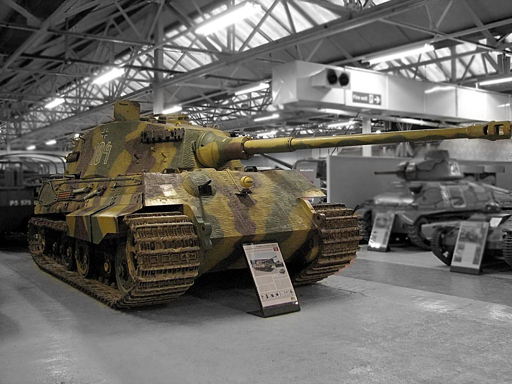

|  |
|
Panzerkampfwagen VI Ausf. B, «Tiger II», или «Короле́вский тигр» (перевод с нем. «Königstiger»[1]) — немецкий тяжёлый танк заключительного периода Второй мировой войны. Производился серийно с марта 1944 года и до конца войны. Всего выпущено 487 серийных танков. Последний серийный тяжёлый танк нацистской Германии[2]. Благодаря мощной 88-мм пушке был способен поражать в лобовой проекции все танки антигитлеровской коалиции периода Второй мировой войны на дистанциях более 2,5 км, что значительно превышало эффективную дальность стрельбы танковых пушек союзных войск[3]. Толстые листы брони, расположенные под рациональными углами наклона, обеспечивали танку высокую защиту от большинства противотанковых средств того времени. Вместе с тем, высокий вес и недостаточная мощность двигателя обусловили невысокие ходовые качества и общую низкую надёжность «Тигра II». В процессе разработки проекта, обозначение перспективной машины несколько раз менялось. Итоговая история изменения обозначения проекта танка при создании выглядела следующим образом: VK 45.02 (H) — присвоено 15 апреля 1942 года; Tiger II VK 45.02 (H) — 18 сентября 1942 года; Tiger III (VK 45.03) — 12 октября 1942 года; Henschel Tiger B — 8 января 1943 года; Tiger II VK 45.02 — 3 марта 1943 года; Pz.Kpfw. Tiger Ausf. B, Pz.Bef.Tiger Ausf. B — 2 июня 1943 года. Серийный танк получил следующие обозначения и названия: по специальной немецкой классификации (см. «Классификация германской бронетехники периода Второй мировой войны») — Sd.Kfz. 182; по армейской немецкой классификации — Panzerkampfwagen VI Ausf. B (PzKpfw VI Ausf. B, Pz. VI Ausf. B); «Tiger II» (применялось в армиях различных воюющих сторон как полуофициальное обозначение); «Королевский тигр» (неофициальное обозначение в армиях различных воюющих сторон, в частности, нем. Königstiger и англ. King Tiger, Royal Tiger); |